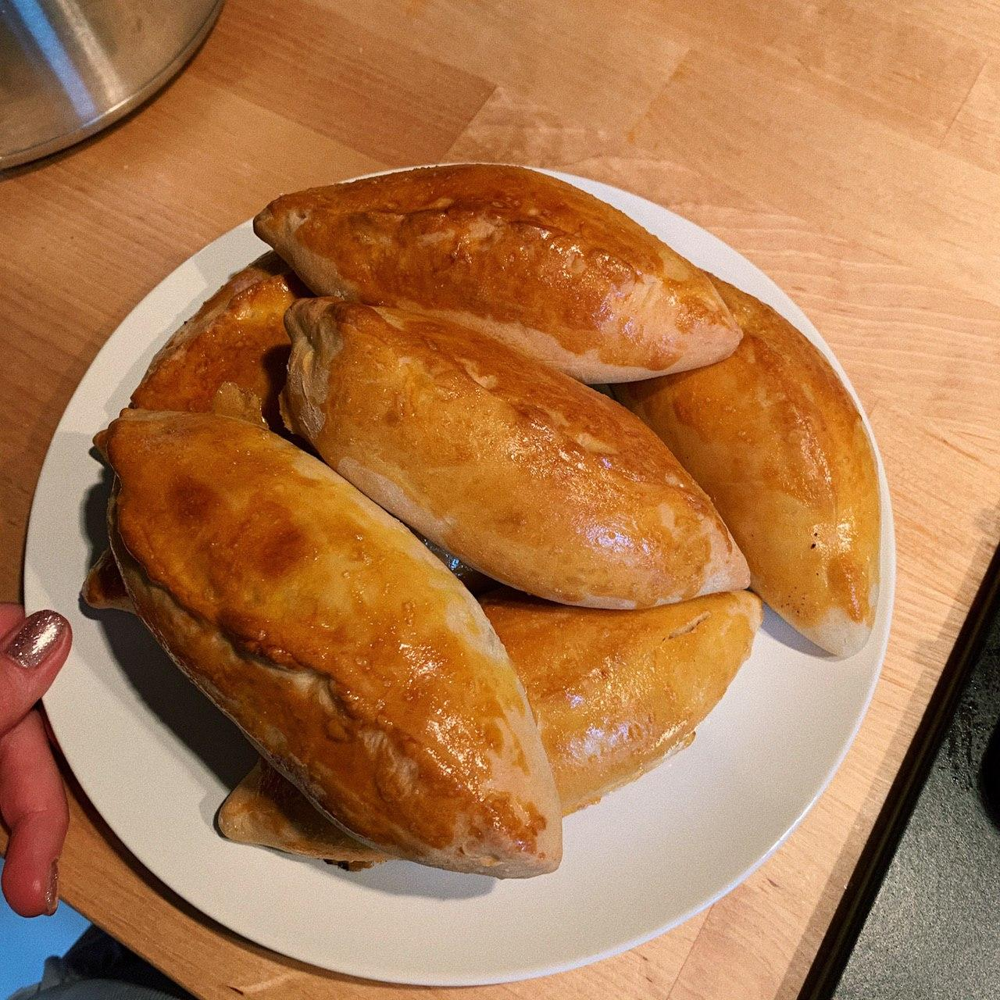
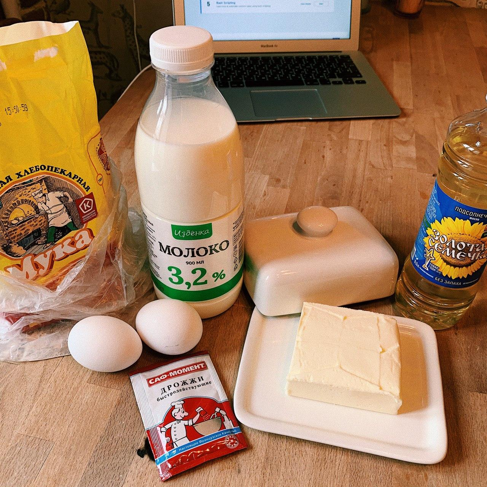
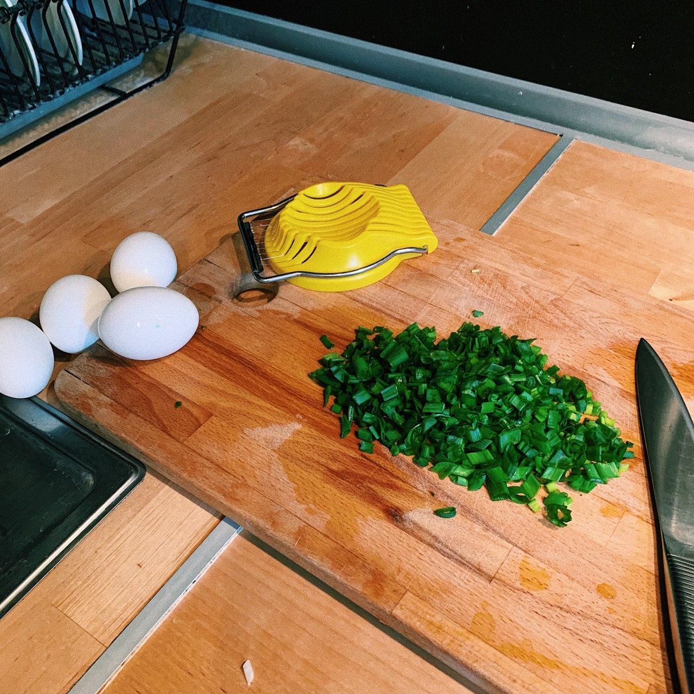
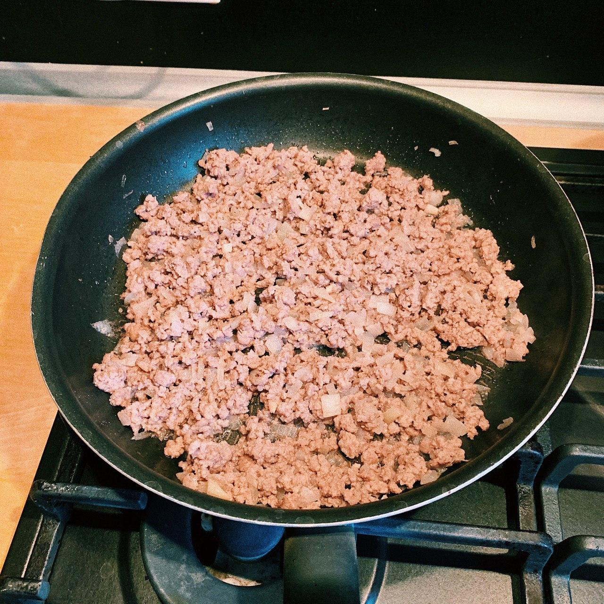
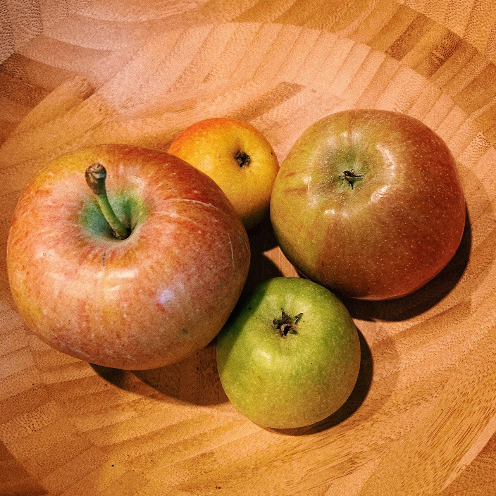
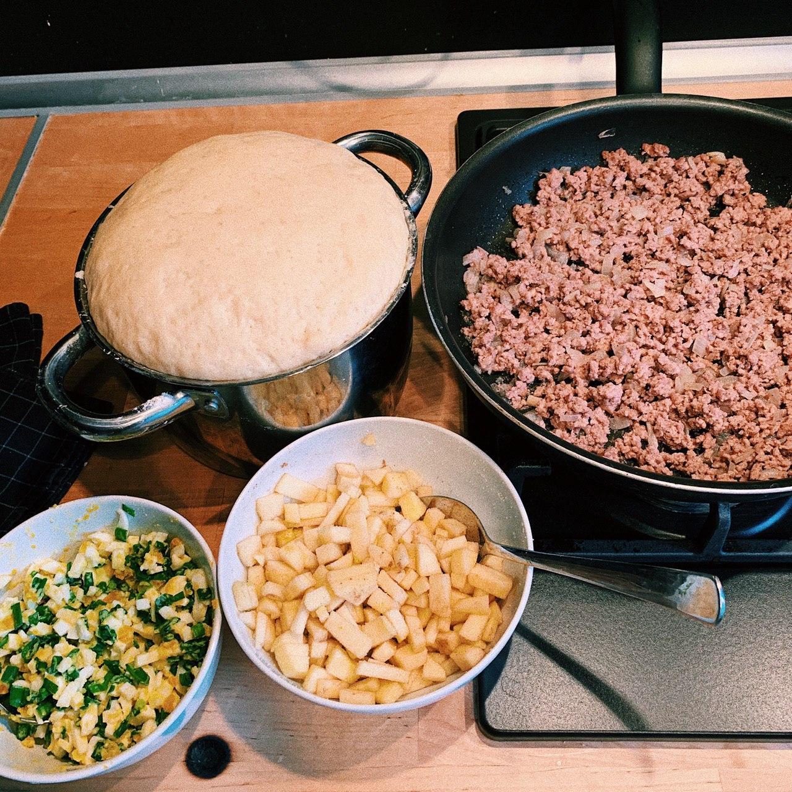
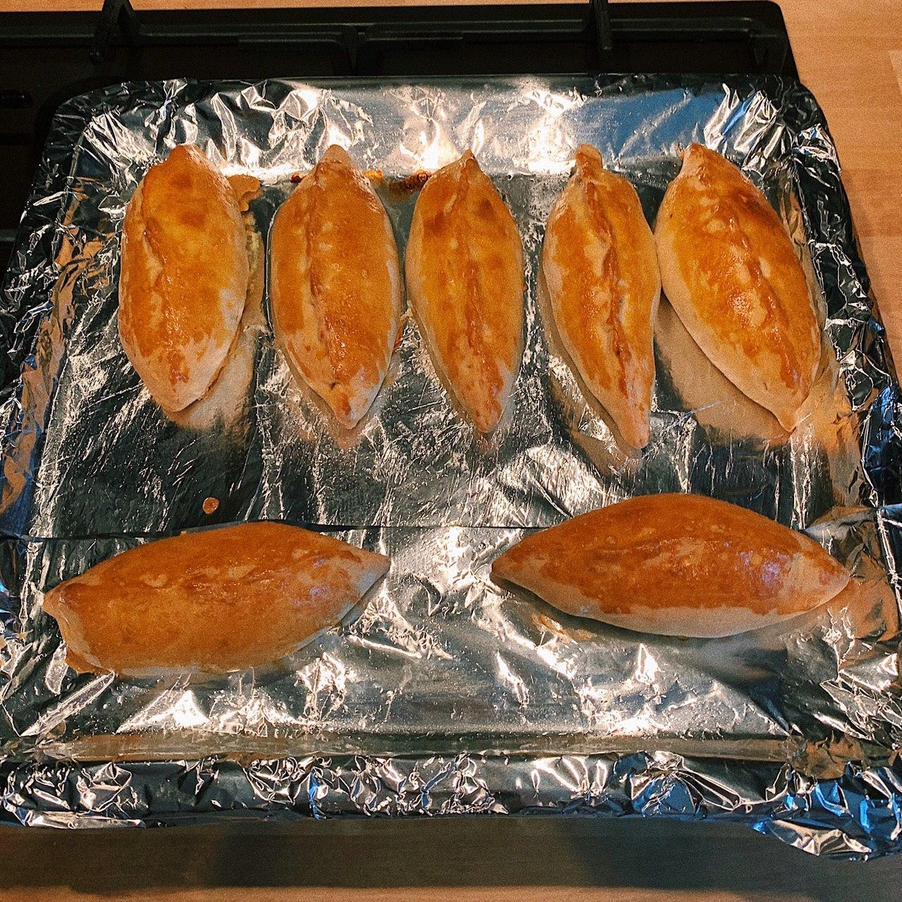

Рецепт
Домашние пирожки с тремя начинками
15 порций
4 часа

Ингредиенты
| Для теста | |
|---|---|
| Мука пшеничная | 750 гр |
| Яйцо | 2 шт | Теплое молоко | 500 мл |
| Сливочное масло | 50 гр |
| Дрожжи быстродействующие (один пакетик) | 11 гр |
| Сахар/заменитель сахара, например, Фитпарад | 1 ст л/1 чайная ложка |
| Соль | 1 ст л |
| Растительное масло/оливковое масло | 1 ст л |
| Для мясной начинки | Говяжий фарш | 400 гр | Лук | 1 шт |
| Перец черный | По вкусу |
| Соль | По вкусу | Для начинки с луком и яйцом | Яйцо | 4 шт | Лук зеленый | 150 гр |
| Соль | По вкусу | Для яблочной начинки | Яблоко | 4 шт | Сахар/заменитель сахара, например, Фитпарад | 1 ст л/1 ч л | Корица | По вкусу |
Пошаговый фото-рецепт
1. Готовим тесто

Для начала мы берем тёплое молоко и добавляем туда дрожжи. Дрожжи нужно хорошо размешать, чтобы они растворились.
Добавляем соль и сахар и немного муки (чтобы тесто стало чуть вязкое, как на блинчики), снова все перемешиваем и отставляем в сторону.
Далее берем яица и смешиваем с растопленным сливочным маслом (проследите, чтобы оно было не горячее) все это взбиваем и также добавялем немного муки, снова перемешиваем.
Далее смесь с яицами и маслом мы добавляем в смесь с молоком и дрожжами, хорошо все замешиваем и добавляем оставшуюся муку.
В конце доавялем немного растительного масла, чтобы тесто стало менее липким.
Укладыываем тесто в глубокую миску, накрываем полотенцем и отправляем на час в теплое место (можно — в духовку при 30–40 градусах).
2. Готовим начинку из лука и яйца

Пока наше тесто подходит, мы можем заняться начинкой.Отвариваем яица, затем нарезаем их, нарезаем зеленый лук и смешиваем все это, не забывая посолить.
3. Готовим мясную начинку

Для начала нам нужно будет мелко нарезать лук, обжарить его с маслом минуты 2-3 на хорошо разогретой сковороде до прозрачного состояния.
Затем добавить к луку говяжий фарш и жарить до готовности минут 8-10. Так же посолить и поперчить по вкусу.
3. Готовим яблочную начинку

И наконец моя любимая начинка :) Яблоки моем, очищаем от шкурки и семян, мелко нарезаем. Посыпаем сахаром или сахарозаменителем, добавляем пару щепоток корицы и перемешиваем.
4. Лепим пирожки

Как раз пока мы готовили начинки, подошло наше тесто. Далее нам нужно еще раз хорошо размесить тесто, затем разделить его на кусочки и растянуть каждый кусочек руками и скалкой(количество кусочков будет завсисеть от того какой велечины пирожки вы любите, у меня получилось 15 больших пирожков). Далее на середину теста мы кладем начинку и плотно залепливаем. P.S. Пока мы лепим пирожки, можно включить духовку, чтобы она успела нагреться до нужных нам 180-190 градусов.
5. Отправляем пирожки в духовку

После того, как мы слепили пирожки, выкладываем их на противень, предварительно смазав его маслом(чтобы пирожки не прилипли).
Также можно смазать пирожки сверху взбитым желтком, чтобы тесто стало более золотистым. Выпекать пирожки примерно 20-25 минут, пока хорошенько не подрумянятся.